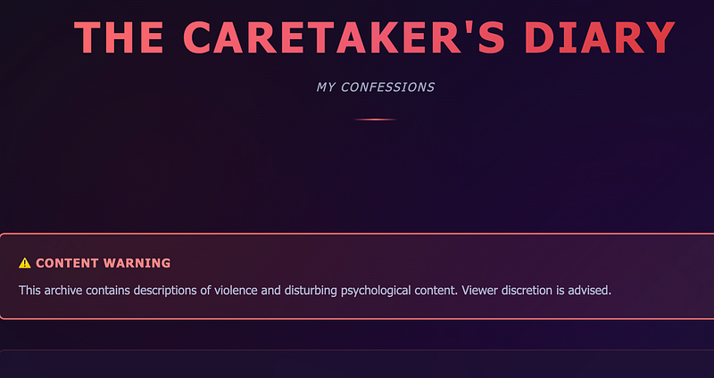
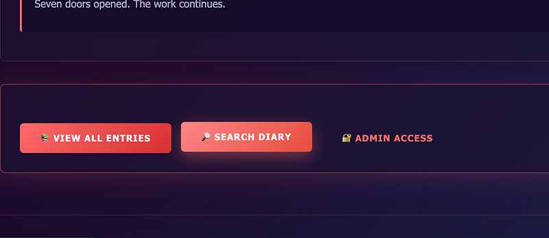
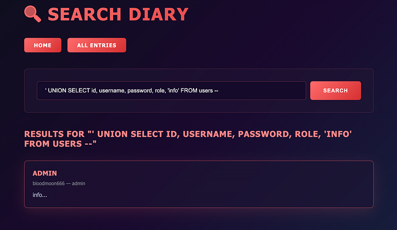
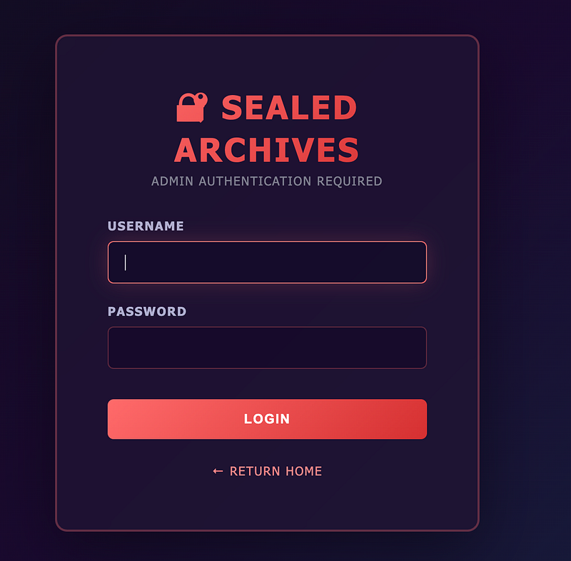
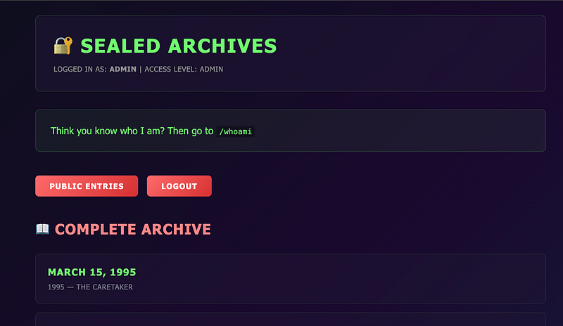
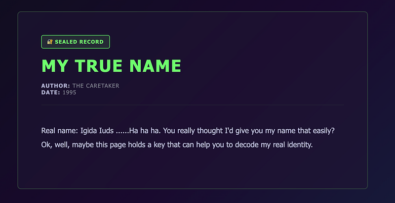
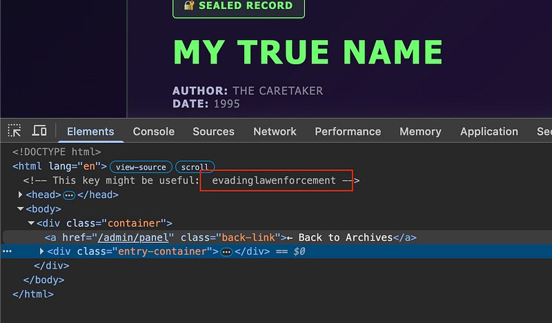
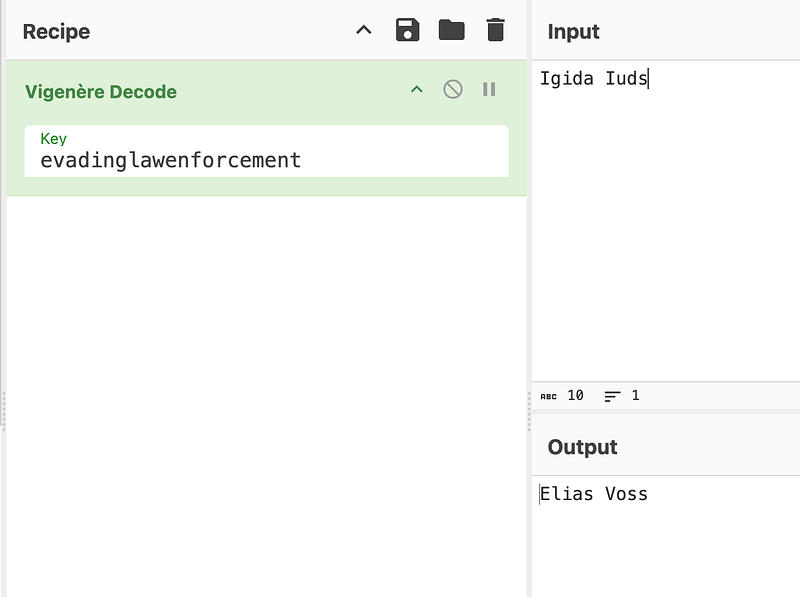
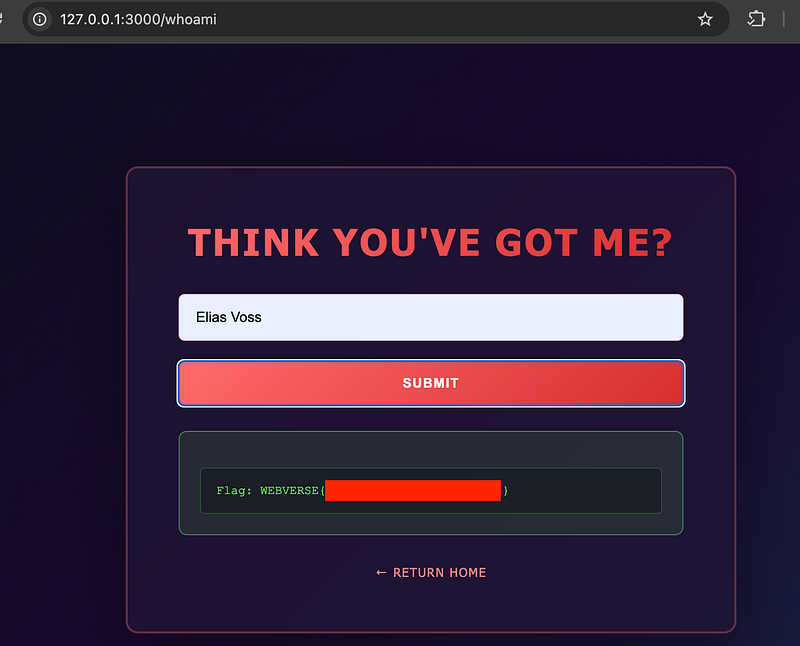

OSCP · OSWP · PWPP · PWPA · PAPA · EnCE · Linux+ · LPIC-1 · Network+ · Security+ · Pentest+ · eJPT · eWPT · BSc · PGCert
The Caretaker (Official Writeup)
Lab can be found at: https://webverselabs-pro.com/
First, you’ll land on the diary of a wanted man:

Scroll to the bottom and select “SEARCH DIARY”:

The search field is vulnerable to SQLi. The following payload will reveal the username and password to log into the diary:

Go back to the homepage and select “ADMIN ACCESS”. Enter the credentials you got from the SQLi:

Now you’ll be in a new area known as the “SEALED ARCHIVES”. Scroll down to the bottom to see an interesting blog post.

The Caretaker has given you his name. Or has he? “Igida Iuds”. Then he hints that the page may reveal a key to help you figure out his real name:

Open up dev tools and you’ll see the key: evadinglawenforcement

The key can be decoded on cyberchef and the real name you have been looking for is: Elias Voss.

Now, enter the name into the /whoami page and you’ll be rewarded with the flag:

Thanks for following along!
🍺 Quick message to readers: if my writeups help you, please consider a small donation to my buymeacoffee link here. This is not required but is very much appreciated! 🍺